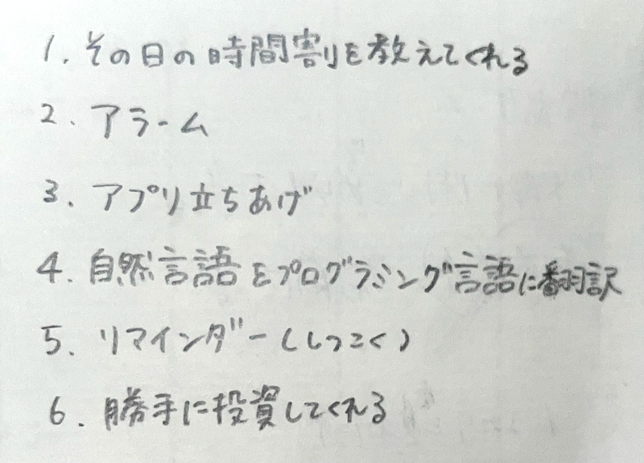
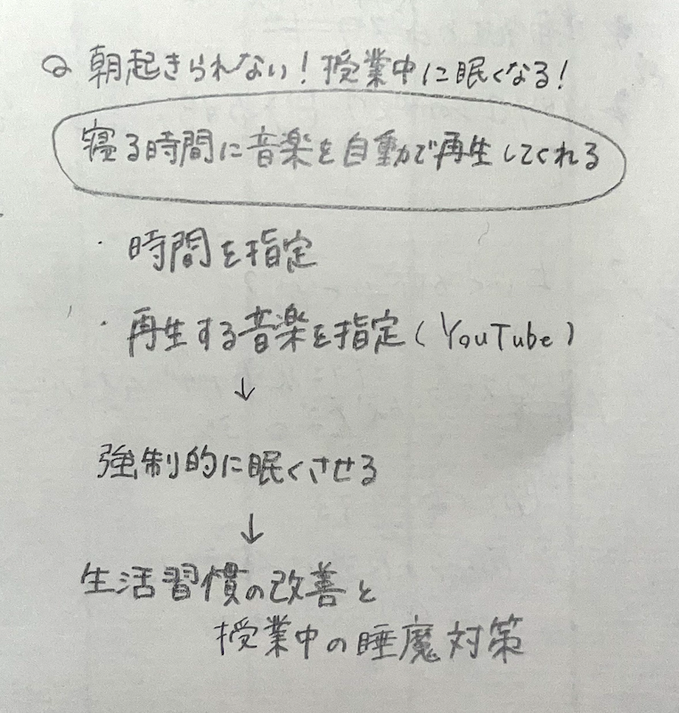
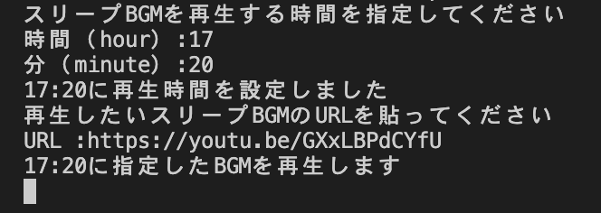

⇩私たちの班であがった意見
このような意見があがりましたが、最終的に私たちの班では「朝起きられない」や「授業中に眠くなる」という悩みをプログラミングでどうにか解決できないか考えることにしました。
⇩そしてこのような案を考えました
⇩いくつかのwebサイトを参考にし、作成したソースコード
- import schedule
- import time
- #時間設定
- print("スリープBGMを再生する時間を指定してください")
- hour = input("時間（hour）:")
- minute = input("分（minute）:")
- target = f"{hour.zfill(2)}:{minute.zfill(2)}"
- print(target+"に再生時間を設定しました")
- #再生したい動画を指定
- print("再生したいスリープBGMのURLを貼ってください")
- movie = input("URL :")
- print(target+"に指定したBGMを再生します")
- #defは「定義」ということ
- def job():
- import webbrowser
- webbrowser.open(movie)
- schedule.every().day.at(target).do(job)
- #時間待ち
- while True:
- schedule.run_pending()
- time.sleep(60)
このプログラムでは自分で設定した時間に指定した動画を流すことができます。聴くと眠くなる動画を設定することによって強制的に眠気が襲ってくるので、生活習慣の改善と授業中の睡魔対策にもつながります。
⇩実行してみるとこんな感じ
実際に時間になると動画が勝手に再生されます。
問題点は、常にパソコンを開いていないと動画が再生されないことです。